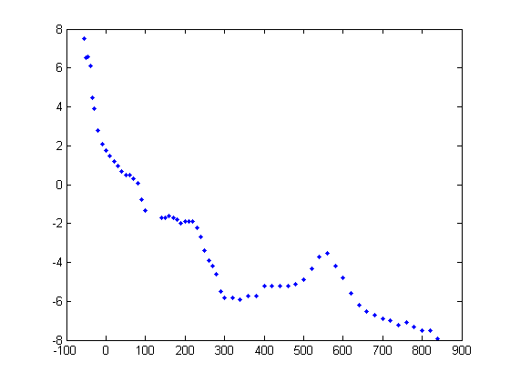

Extracting JarKus data from netCDF
For this example, we will extract data from a Jarkus profile in Egmond aan Zee from the OPeNDAP server, for the year 1999.
Contents
Locate the data file on the internet
To locate the netCDF data file, browse to the OPeNDAP website:
http:\\OPeNDAP.deltares.nl:8080
Find the Jarkus netCDF file by clicking on the following links: HYRAX ==> Rijkswaterstaat ==> JarKus ==> transects. Click on the link to the file and extract the direct link to the JarKus netCDF data file.
url = 'http://OPeNDAP .deltares.nl:8080/OPeNDAP/rijkswaterstaat/jarkus/profiles/transect.nc';
Alternatively, you can use the function jarkus_url. This has the advantage that it returns the link to the netCDF file on the Deltares network if it is available. This is faster than accessing data over the internet.
url = jarkus_url
url = P:\mcdata\opendap\rijkswaterstaat\jarkus\profiles\transect.nc
View metadata
We can get data from this file using the function nc_varget. But first, let's see what is in the file using nc_dump. nc_dump shows all the metadata in the file. In the case of the JarKus file this is a lot.
nc_dump(url)
netcdf P:\mcdata\opendap\rijkswaterstaat\jarkus\profiles\transect.nc {
dimensions:
time = UNLIMITED ; (44 currently)
alongshore = 2178 ;
cross_shore = 1925 ;
stringsize = 100 ;
variables:
long id(alongshore), shape = [2178]
id:long_name = "identifier"
id:comment = "sum of area code (x1000000) and alongshore coordinate"
long areacode(alongshore), shape = [2178]
areacode:long_name = "area code"
...From the metadata we can see that there is a field 'id'. To get this data, use nc_varget.
id = nc_varget(url,'id')
id =
2000100
2000101
2000102
2000103
2000104
2000105
2000106
2000120
2000140
2000160
2000180
2000200
...figure out which part of the data we need
The transect we are looking for is #3800, in area 7 (Noord-Holland). This transect has id 7003800. We know this from our previous nc_dump
id:comment = "sum of area code (x1000000) and alongshore coordinate"
transect_nr = find(id==7003800)
transect_nr =
1074
To get only data from this transect, we can give nc_varget some extra arguments. The first optional argument is the start index from where you want to extract data. The second argument indicates the number or entries you want along this dimension. In our case this is 1.
id = nc_varget(url,'id',transect_nr,1)
id =
7003825
The returned transect number is one off. This is becasue of zero based indexing of NetCDF files (versus 1 based indexing of MATLAB). This is easily corrected:
id = nc_varget(url,'id'); transect_nr = find(id==7003800)-1; id = nc_varget(url,'id',transect_nr,1)
id =
7003800
now that we have the correct transect, we can do the same for the year
year = nc_varget(url,'time'); year_nr = find(year == 1966)-1; year = nc_varget(url,'time',year_nr,1)
year =
1966
Extract the data
The cross shore coordinate relative to RSP (RijksStrandPalen) is stored in the cross_shore field and the z data in the altitude field. Extracting the xRSP data is simple:
xRSP = nc_varget(url,'cross_shore');
from the nc_dump we find:
double altitude(time,alongshore,cross_shore), shape = [44 2178 1925]
This means that the altitude data is stored in a 3d matrix, which is a function of time, alongshore and cross_shore cordinates. We want data for 1 year, and for 1 alongshore coordinate, but for all cross shore locations. Use -1 in the second argument to ask for all data in that dimension:
z = nc_varget(url,'altitude',[year_nr,transect_nr,0],[1,1,-1]);
Note that the first z poi9tn we want data form is 0 becasue of the zero besed indexing!
Not for every possible cross shore location, there is altitude information. For our case we might as well leave out those data points:
x = xRSP(~isnan(z)); z = z(~isnan(z));
Plot the data
always plot data to check if it's ok:
plot(x,z,'.b')
